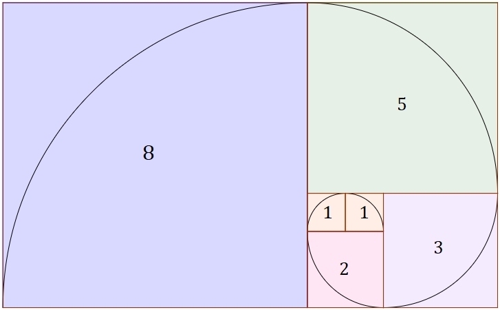

Na matemática, a sucessão de Fibonacci (ou sequência de Fibonacci), é uma sequência de números inteiros, começando normalmente por 0 e 1, na qual cada termo subsequente corresponde à soma dos dois anteriores. A sequência recebeu o nome do matemático italiano Leonardo de Pisa, mais conhecido por Fibonacci, que descreveu, no ano de 1202, o crescimento de uma população de coelhos, a partir desta. Esta sequência já era, no entanto, conhecida na antiguidade.
Quer testar se um número pertence ou não a sequência? Insira o número desejado na lacuna abaixo e clique no botão "Buscar"!